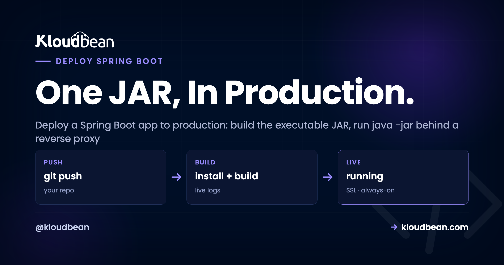

How to Deploy a Spring Boot App to Production

You built a Spring Boot service. It runs locally with ./mvnw spring-boot:run, the endpoints answer on localhost:8080, and everything's green. Then you go to deploy that Spring Boot app to production and the questions pile up. Where does the JAR run? What about the port, the database, the config, the memory? Good news: Spring Boot makes this simpler than most stacks. It packages your whole app, embedded web server and all, into one executable JAR. This is the honest guide to Spring Boot hosting: build the JAR, run it, and handle the five production details that matter.
Build an executable JAR with ./mvnw clean package (or ./gradlew bootJar), then run java -jar app.jar on any server that has a JVM. Spring Boot embeds Tomcat, so there's no separate app server to install. Externalize config through environment variables (SPRING_DATASOURCE_URL, SPRING_PROFILES_ACTIVE=prod), set a sane -Xmx so the JVM isn't OOM-killed, put it behind a reverse proxy for TLS, keep the process supervised so it restarts on crash and reboot, and point it at a managed database.
What actually happens when you deploy a Spring Boot app
The mental model is the whole game. Spring Boot builds what people call a fat JAR (or uber JAR): one file that contains your compiled classes, every dependency, and an embedded web server, usually Tomcat. There's no WAR to drop into a servlet container you installed separately. The server is inside the JAR.
So the runtime story is short. Put a JVM on a machine, copy the JAR over, run java -jar app.jar. The embedded Tomcat starts, binds a port, and serves your endpoints. Your entry point is a plain main method, the one Spring Boot generated for you:
@SpringBootApplication
public class Application {
public static void main(String[] args) {
SpringApplication.run(Application.class, args);
}
}A Spring Boot app is just a long-running Java process, and everything below is about running that one process well: config, a port, memory, staying alive, and a database.
webapps/, manage two lifecycles apart. Fat JARs collapse that into one artifact you own end to end. You can still build a WAR for a legacy container, but for a new service the executable JAR is the right default.Build the executable JAR (Maven or Gradle)
Both build tools produce the same kind of artifact, so use whichever your project already uses. The command differs, the result doesn't.
# Maven: build the executable JAR
./mvnw clean package
# -> target/myapp-1.0.0.jar
# Gradle: same idea, different task
./gradlew clean bootJar
# -> build/libs/myapp-1.0.0.jar| Build tool | Build command | Output artifact |
|---|---|---|
| Maven | ./mvnw clean package | target/myapp-1.0.0.jar |
| Gradle | ./gradlew clean bootJar | build/libs/myapp-1.0.0.jar |
Use the committed wrapper (./mvnw or ./gradlew), not a globally installed Maven or Gradle. It pins the build-tool version, so CI matches your laptop and you dodge a whole genre of "works locally, breaks on the build server" tickets. Build in CI from Git, not by hand. More on that below.
Run it: java -jar and an embedded server
With the JAR built, running it is one line. People expect this part to be hard. It isn't:
# run the fat JAR on any machine with a JVM
java -jar target/myapp-1.0.0.jar
# with a heap cap and the prod profile active
java -Xmx512m -Dspring.profiles.active=prod -jar target/myapp-1.0.0.jarThe JVM boots, Spring wires up your beans, the embedded Tomcat starts, and you'll see the familiar "Tomcat started on port 8080" line. No CATALINA_HOME, no server.xml, no WAR to drop anywhere. One rule: match the Java version you built against. A JAR compiled for Java 17 needs a Java 17 (or newer) runtime, or it throws UnsupportedClassVersionError on startup.
Externalize config: application.properties vs environment variables
This is the Spring-specific bit that trips people. Your application.properties or application.yml is fine for defaults: the values that are the same everywhere and aren't secret. Commit those.
Secrets and anything that changes per environment come from the environment, not the JAR. Bake a production password into application.properties and commit it, and you've published your credentials to everyone with repo access, and to Git history forever. It's the single most common Spring Boot production mistake, and it's completely avoidable.
Spring makes this easy through relaxed binding. Any property has an environment-variable form: uppercase it, turn dots into underscores, and the env var overrides the file. So you keep safe defaults in the JAR and inject the real values at runtime:
# application.yml -> safe defaults, committed to git
server:
port: 8080
spring:
datasource:
url: jdbc:postgresql://localhost:5432/appdb# production -> set in the dashboard, never committed
SPRING_PROFILES_ACTIVE=prod
SPRING_DATASOURCE_URL=jdbc:postgresql://10.0.0.5:5432/appdb
SPRING_DATASOURCE_USERNAME=appuser
SPRING_DATASOURCE_PASSWORD=change-meThe mapping people forget:
| Property (in the file) | Environment variable |
|---|---|
spring.datasource.url | SPRING_DATASOURCE_URL |
spring.datasource.username | SPRING_DATASOURCE_USERNAME |
spring.datasource.password | SPRING_DATASOURCE_PASSWORD |
spring.profiles.active | SPRING_PROFILES_ACTIVE |
server.port | SERVER_PORT |
Profiles are the other half. Put production overrides in application-prod.yml, set SPRING_PROFILES_ACTIVE=prod, and Spring layers that file on top of the defaults. Forget to activate it and your app runs with dev settings in production, which is how a service ends up pointing at a laptop database on launch day. More on keeping secrets out of Git in environment variables done right.
The port and the reverse proxy
Spring Boot listens on server.port, default 8080. In production your app doesn't face the internet directly. A reverse proxy sits in front, terminates TLS on 443, and forwards plain HTTP to your app's internal port. The proxy handles certificates and the public connection; your JVM just handles requests.
Two ways to set the port. Set server.port (or its SERVER_PORT env form) and point the proxy at that number. Or, if your platform hands you a PORT variable, bridge it, since Spring Boot doesn't read a bare PORT on its own:
# application.properties: use the platform's PORT if present, else 8080
server.port=${PORT:8080}Get this wrong and the proxy talks to a port nothing is listening on, which shows up as a 502 or 503 while your app sits there healthy on the wrong number. If the reverse-proxy concept is fuzzy, we break it down in reverse proxy explained, and the hands-on config (written for Node, but the behavior is identical) is in nginx reverse proxy for Node. On a managed server you don't hand-write any of this; the proxy and a free auto-renewing certificate come with the stack.
JVM memory: set -Xmx before the OOM killer does
This one bites Java deploys specifically. The JVM sizes its heap from how much memory it thinks the machine has, and on a small server or container that guess goes wrong both ways. Too timid, and you paid for RAM the heap never touches. Too greedy, on older runtimes that ignored the container's memory limit, and the heap outgrows the box, so the Linux kernel kills the process. No stack trace, just a service that vanishes and restarts.
The fix is to stop guessing. Cap the heap:
# cap the max heap so the JVM stays inside the box
java -Xmx512m -jar app.jarTreat 512m as illustrative, not a recommendation; size it to your app and your box. The rule that keeps you safe: the heap is not the whole process. Metaspace, thread stacks, and buffers live outside -Xmx, so the real footprint is bigger than the heap. Leave headroom. On a 1 GB box, giving -Xmx the full gigabyte is how you get OOM-killed under load. Modern JVMs (Java 11 and up, and late Java 8 builds) are container-aware and respect a cgroup limit, but an explicit -Xmx removes the doubt. I'd rather read one number in a config than reason about defaults at 2am.
Watching real memory beats guessing. A managed server shows the JVM's actual usage, so you size the heap and the box against real numbers, not vibes.

Keep the process alive (systemd, or let the platform do it)
Run java -jar app.jar in an SSH session and it dies when that session closes. That's not a deploy, that's a demo. In production something has to own the process: start it on boot, restart it on crash, keep it running after you log out. On a plain Linux box that's systemd. A minimal unit:
# /etc/systemd/system/myapp.service
[Unit]
Description=My Spring Boot app
After=network.target
[Service]
User=appuser
EnvironmentFile=/opt/myapp/app.env
ExecStart=/usr/bin/java -Xmx512m -jar /opt/myapp/app.jar
Restart=always
RestartSec=5
[Install]
WantedBy=multi-user.targetRestart=always is the line that matters. It turns "crashed and down until someone noticed" into "crashed and back in five seconds." EnvironmentFile loads secrets from a file that never touches Git. If you're weighing supervisors, or came from Node and know PM2, the tradeoffs are in PM2 vs systemd. Short version for a JVM app: systemd is the natural fit, since you're supervising one long-lived process, not a fleet of Node workers.
On a managed platform you don't write the unit file. The platform runs your start command as a supervised service, brings it back after a crash, and restarts it after a reboot. Same guarantee, none of the wiring.
Connect Spring Boot to a managed database
Almost every Spring Boot service is an API in front of a database. Spring Data JPA or plain JDBC talks to Postgres or MySQL, and Spring auto-configures the connection from the same spring.datasource.* properties you already saw. In production those come from the environment:
# these three env vars are all Spring needs to connect
SPRING_DATASOURCE_URL=jdbc:postgresql://10.0.0.5:5432/appdb
SPRING_DATASOURCE_USERNAME=appuser
SPRING_DATASOURCE_PASSWORD=change-meSpring Boot ships with HikariCP as its default connection pool, and that default earns its keep. Opening a fresh database connection is slow. A pool keeps connections warm and hands them out: a request borrows one, runs its query, returns it. Without pooling, a traffic burst opens a socket per request and blows through the database's connection limit. You'll see FATAL: too many connections and a pile of failed requests. Cap the pool so your app can't ask for more than the database can give:
# HikariCP is the default pool; size it deliberately
spring.datasource.hikari.maximum-pool-size=10Size it against your database, and remember the math changes when you run more than one instance: three app instances at a pool of 10 each is 30 connections, not 10. The why-and-how of pool sizing is in database connection pooling. For launching the database itself, wiring the connection string safely, and running migrations, follow add a managed database to your app.
Two rules that aren't optional. Keep the database on a private network, not a public port, so only your app reaches it. And never hardcode credentials in application.properties; they belong in the environment, where you rotate a password without a code change.

Deploy a Spring Boot app on a managed server
Here's where it comes together. A managed server hands you the pieces already assembled: a JVM, a reverse proxy, free SSL, a firewall, and process supervision. Java is a first-class managed runtime on Kloudbean, alongside Node, Python, PHP, and Ruby, so you bring the repo and it brings the plumbing.
Add the app and pick the runtime
Create a server, choose a cloud (Kloudbean runs seven: AWS, Amazon Lightsail, Google Cloud, DigitalOcean, Vultr, Akamai Linode, and UpCloud), pick a size, then add your application. A single JVM service is comfortable on a small box to start; resize later if the numbers say so.

Deploy from Git with live build logs
Deploys come from your repository, which is exactly right: the repo is the source of truth, not a JAR you scp'd once and forgot. Connect GitHub, pick a branch, and set the build and start commands:
# Build command
./mvnw clean package -DskipTests
# Start command
java -Xmx512m -jar target/myapp-1.0.0.jarTrigger a deploy and the build log streams live, so you watch the dependencies download, the compile, and the JAR get built instead of guessing why it failed. Turn on automated deployment and every push to that branch builds and ships itself, with a recorded history of what went out. Same continuous-deploy loop the big platforms sell, on a server you own. Full setup in CI/CD auto-deploy from GitHub.

Set your environment variables in the console (the SPRING_DATASOURCE_* values, SPRING_PROFILES_ACTIVE=prod, and any keys), point a domain, and turn on the free auto-renewing certificate. The proxy is already terminating TLS, so your JVM never thinks about certificates.
Where Spring Boot deploys usually go wrong
Most failed Java deploys aren't Java problems. They're config and memory problems. The list of suspects is short, so check these before you reread your service classes:
- Secrets baked into the JAR. A password in a committed
application.propertiesis a leak and a rotation headache. Move it to an env var. - The prod profile never activated. No
SPRING_PROFILES_ACTIVE=prod, so the app runs dev config in production and connects to the wrong things. - Port mismatch. The app listens on 8080 while the proxy forwards somewhere else, and you get a 502 from a perfectly healthy app.
- No
-Xmxon a small box. The heap outgrows the machine and the kernel OOM-kills the process on the first real traffic. - Run in a shell, not supervised. The JAR dies with the SSH session, or never comes back after a reboot.
- A connection per request. Bypassing the pool exhausts the database's connections under load.
- Java version mismatch. A JAR built for a newer Java throws
UnsupportedClassVersionErroron an older runtime.
Notice what's not on that list: your business logic. It's almost never the endpoints. So when a deploy breaks, resist the urge to reread controllers. Read the startup logs, find the one line that names the real cause, fix that, and ship again. Faster, and usually right.
Your Spring Boot app, live on a server you own.
Deploy the JAR from Git with live build logs, wire in a managed Postgres or MySQL, and get a reverse proxy with free auto-renewing SSL, no hand-rolled config. Start at kloudbean.com; sizes and plans (from $8/mo, Enterprise custom) are on pricing.
Managed Java runtime · Git deploy with live build logs · Managed PostgreSQL and MySQL · Reverse proxy and free SSL · Private networking · Free migration · Free trial
FAQ
How do I deploy a Spring Boot app to production?
Build an executable JAR with ./mvnw clean package or ./gradlew bootJar, then run java -jar app.jar on any server with a JVM. Externalize config via environment variables, activate the prod profile, set a sane -Xmx, front it with a reverse proxy for TLS, and keep it supervised. On a managed platform you deploy from Git and the proxy, SSL, and supervision come with the stack.
How do I run a Spring Boot JAR in production?
Run java -jar app.jar, but not in a terminal that closes. Wrap it in systemd with Restart=always so it survives crashes and reboots, or let a managed platform run your start command as a supervised service. Match the runtime to the Java version you built against.
Do I need to install Tomcat separately for Spring Boot?
No. A Spring Boot fat JAR embeds Tomcat, so java -jar app.jar starts the server for you. Nothing separate to install or patch. You can still build a WAR for a legacy external container, but for a new service the embedded server is the right default.
How do I set environment variables and profiles for Spring Boot?
Spring uses relaxed binding: uppercase a property and turn dots into underscores, so spring.datasource.url becomes SPRING_DATASOURCE_URL. Put per-environment overrides in application-prod.yml and set SPRING_PROFILES_ACTIVE=prod to activate them. Keep secrets in env vars, never in the JAR.
How do I connect Spring Boot to a PostgreSQL or MySQL database?
Set SPRING_DATASOURCE_URL, SPRING_DATASOURCE_USERNAME, and SPRING_DATASOURCE_PASSWORD from the environment and Spring auto-configures the datasource, pooled by HikariCP. Keep the database on a private network and never hardcode credentials. Launch a managed Postgres or MySQL and feed its details into those three variables.
What -Xmx should I set for a Spring Boot app?
There's no universal number, so size it after watching real memory use. The point is to set it, so the heap can't outgrow a small box and get OOM-killed. And remember the heap isn't the whole process: metaspace, thread stacks, and buffers live outside -Xmx, so leave headroom.
Should I run Spring Boot behind nginx or a reverse proxy?
Yes, in production. The proxy terminates TLS on 443 and forwards plain HTTP to your app's internal port, so the JVM never handles certificates. Make sure it forwards to the same port Spring Boot listens on. On a managed server the proxy and free SSL come with the stack.
Maven or Gradle for building the Spring Boot JAR?
Either. Use whatever your project already uses, since both produce the same executable JAR. Maven builds it with ./mvnw clean package, Gradle with ./gradlew bootJar. Use the committed wrapper so the build version is pinned and CI matches your laptop.
How do I keep a Spring Boot app running after it crashes or the server reboots?
Don't run it in a shell session. A systemd unit with Restart=always restarts it in seconds and starts it on boot, or a managed platform does the same by running your start command as a service. That's the difference between a service and a process someone babysits.
Can I auto-deploy my Spring Boot app from GitHub?
Yes. Connect the repository, choose a branch, set the build and start commands, and turn on automated deployment. Each push then builds and ships with live build logs, and every deploy is recorded. Releasing a change becomes a plain git push.